Перейти на главную страницу справочника.
Пересчёт числа витков при изменении схемы укладки обмотки.
- При перемотке электродвигателя, для сохранения его электрических и магнитных характеристик рекомендуется не изменять тип заводской обмотки. Если по какой либо причине обмотчик решит изменить схему укладки обмотки, возможно потребуется пересчёт числа витков в пазу и сечения провода.
- Пересчёт обмоточных данных не требуется.
Когда у заводской и новой обмотки одинаковые электрические и магнитные характеристики или одинаковый средний шаг по пазам.
- Пересчёт обмоточных данных при изменении схемы укладки как в одну, так и в обратную сторону.
1 - Переход с однослойной обмотки с диаметральным шагом на двухслойную или цепную с укороченным шагом.
2 - Переход с однослойной обмотки с диаметральным шагом на однослойную с расширенной фазной зоной или одно-двухслойную обмотку.
3 - Переход с двухслойной обмотки (с изменением среднего шага) на цепную, одно-двухслойную, однослойную с расширенной фазной зоной.
4 - Изменение шага в двухслойной, цепной, одно-двухслойной обмотках.
Обмотки с одинаковыми электрическими и магнитными характеристиками.
- Обмотки, электрические и магнитные характеристики которых равноценны, не требуют пересчёта обмоточных данных при замене одной на другую.
- Для примера возьмём однослойные схемы укладки с диаметральным шагом и одинаковыми характеристиками электродвигателей 36 пазов 1500 об/мин.
Рис. №1 Схема укладки концентрической однослойной обмотки с шагом у=11;9;7 (средний шаг уср=9).
Рис. №2 Схема укладки равносекционной однослойной обмотки с шагом у=9 (средний шаг уср=9).
Рис. №3 Схема укладки однослойной обмотки "вразвалку" с шагом у=9;7+7 (средний шаг уср=8).
Рис. №4 Схема укладки однослойной обмотки "вразвалку" с шагом у=8;8+7 (средний шаг уср=8).
- Для расчёта среднего шага однослойных и двухслойных обмоток, нужно сумму чисел секционных шагов разделить на число секций.
- Для расчёта среднего шага одно-двухслойных обмоток, воспользуйтесь формулой:
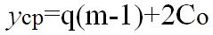
q - число пазов на полюс и фазу, m - количество фаз, Со - число однослойных секций в катушке.
- У схем по рисунку №1 и №2 шаг по пазам разный, но одинаковый средний шаг. У схем по рисунку №1 и №2 средний шаг по пазам у=9, соответственно эти обмотки имеют одинаковые электрические характеристики и пересчёт обмоточных данных при переходе с одной на другую не требуется.
- У схем по рисунку №3 и №4 шаг по пазам разный, но одинаковый средний шаг у=8, соответственно эти обмотки имеют одинаковые электрические характеристики и пересчёт обмоточных данных при переходе с одной на другую не требуется.
- Обмотка "вразвалку" считается диаметральной и имеет одинаковые электрические характеристики с обмотками на рисунках №1 и №2. Пересчёт обмоточных данных не требуется при переходе со схемы укладки "вразвалку" на однослойную с диаметральным шагом (или наоборот).
Пример пересчёта числа витков при изменении схемы укладки обмотки.
Формулы для пересчёта числа витков и сечения провода при изменении схемы укладки обмотки.
Таблица №1. 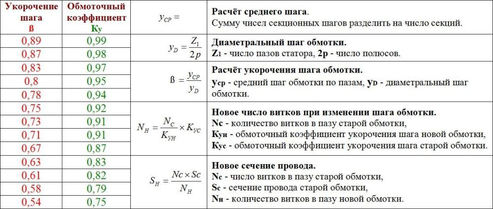
{kind=link}
Для примера пересчёта возьмём электродвигатель серии 4A90L2.
| Тип | Р кВт |
n | U | С. ф. | N | d мм |
а | у | Z1 |
| 4A90L2 | 3,0 | 3000 | 380 | Y | 44 | 1,08 | 1 | 11;9 | 24 |
Рис. №5. Схема укладки однослойной обмотки вразвалку этого двигателя, шаг у=11;9.
- При пересчёте однослойной обмотки на двухслойную, расчет укороченного шага двухслойной обмотки нужно выполнять от равнокатушечной (равносекционной) обмотки
 с диаметральным шагом рис №6.
с диаметральным шагом рис №6.
Рис. №6. Схема укладки однослойной обмотки этого двигателя с диаметральным шагом у=12.
- По таблице №1 для расчёта нового числа витков "Nн", для формулы требуется обмоточный коэффициент укорочения шага старой обмотки "Кус". Пользуясь формулами из таблицы №1, определим обмоточный коэффициент укорочения шага старой (заводской) обмотки, но от диаметрального шага, рисунок №6.
- Для расчёта среднего шага, нужно сумму чисел секционных шагов разделить на число секций. Средний шаг в обмотках с равносекционными катушками всегда будет равен шагу обмотки по пазам.
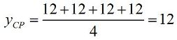
- Диаметральный шаг обмотки.
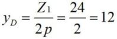
- Расчёт укорочения шага заводской обмотки. В обмотках с диаметральным шагом укорочение шага всегда равно 1.
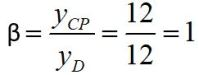
- Обмоточный коэффициент в обмотках с диаметральным шагом всегда будет 1.
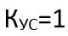
- Сечение провода заводской (старой) обмотки.
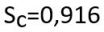
- Далее выбираем новую двухслойную схему укладки с рекомендуемым шагом.
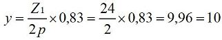
Рис. №7. Схема укладки новой двухслойной обмотки с шагом у=10.
{kind=link}
- По таблице №1 для расчёта нового числа витков "Nн", для формулы требуется обмоточный коэффициент укорочения шага новой обмотки "Кун". Пользуясь формулами из таблицы №1, определим обмоточный коэффициент укорочения шага новой обмотки показанной на рисунке №7.
- Для расчёта среднего шага, нужно сумму чисел секционных шагов разделить на число секций.
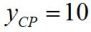
- Расчёт укорочения шага новой обмотки.
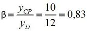
- По таблице №1 при укорочении шага 0,83, обмоточный коэффициент укорочения шага обмотки будет 0,97.
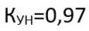
- После нахождения обмоточного коэффициента укорочения шага для старой и новой обмоток, выполняем расчёт нового числа витков в пазу и сечения провода.
- Новое число витков в пазу получилось дробным 45,36. Выбираем число витков в пазу 46, число витков в секции 23.
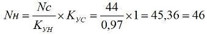
- Прежде чем округлить дробь до ближайшего целого числа, выполним расчёт максимального числа (не более 3% от рассчитанных витков) на которое допустимо уменьшать или увеличивать полученное по расчёту дробное число витков. После расчёта получилось 1,36, мы увеличиваем дробное число витков 45,36 на 0,64, что допустимо по условиям расчёта. Если при расчёте максимально допустимое число меньше требуемого для округления, пересчитайте обмотку на другое число параллельных ветвей или выполните пересчёт на новую обмотку с другим средним шагом.
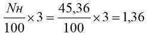
- Новое сечение провода.
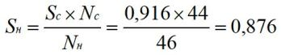
- Возможно сечение провода потребуется уменьшить из-за добавления межслойной изоляции в пазу.
Пересчёт числа витков при изменении шага обмотки в программе Excel. Скачать.
08.12.2015 г.
Литература по данной теме:
Девотченко Ф.С. "Замена обмотки трёхфазных электродвигателей." 1991 г.
Жерве Г.К "Обмотки электрических машин" 1989 г.